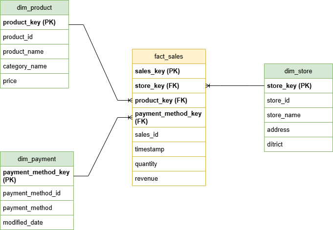
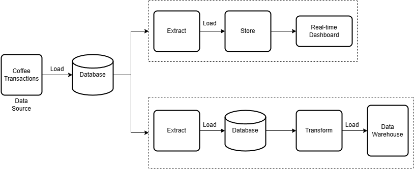
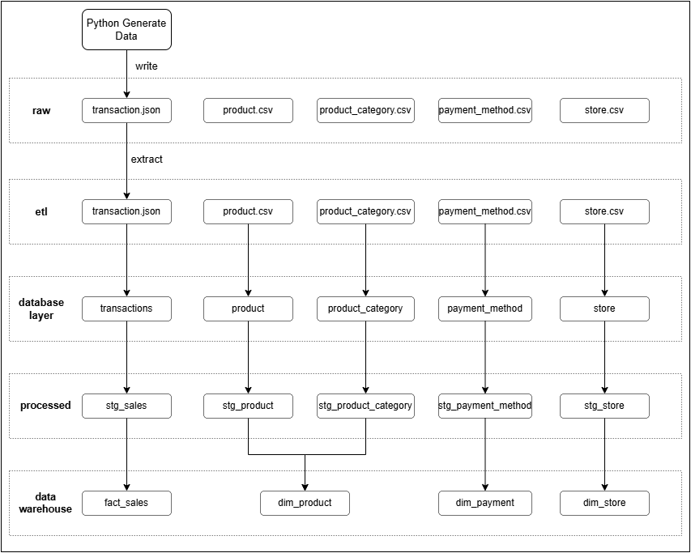

üìù DOCUMENTATION
I. Design
1. Business Problem (Simulation)
This project simulates transaction data from a coffee shop. The data used includes:
transactions: Raw transaction data generated to simulate real-world coffee shop sales.product:The list of products that are currently being sold in the coffee shops.store: Represents various branches or locations of the coffee shop.payment_method: The payment method used when ordering.
2. Data Source
The data is divided into several CSV files and used as follows:
product.csv: A list of products sold in the coffee shop.- product_id: Unique ID of the product
- name: Name of the product
- category_id: The category ID that the product belongs to
- price: The price of the product
product_category.csv: The category of the product.- id: Unique ID for each product category
- name: Name of the product category
- modified_date: The date the category data was last updated
store.csv: The branches of the coffee shop.- id: Unique ID for each coffee shop location
- name: Name of the coffee shop branch
- address: The address of the coffee shop
- district: The district where the coffee shop is located
payment_method.csv: The payment methods supported by the coffee shop- id: Unique ID for each payment method
- method: The name of the payment method (e.g., Cash, Credit Card, etc.)
- modified_date: The date when the payment method data was last updated.
transactions: This JSON data is generated automatically via a Python script. It includes detailed information about the transactions and loaded into MongoDB.- timestamp: The date and time of the transaction
- store_id: The ID of the store where the transaction took place
- total_amount: The total amount of the transaction
- payment_method: The payment method used for the transaction
- currency: The currency of the transaction
- items: An array of the products sold during the transaction, where each item contains
- product_id: Unique ID of the product
- name: Name of the product
- category: Category name of the product
- quantity: The quantity of the product sold
- subtotal: The total amount for that product (price × quantity)
3. Business Requirements
-
Real-time Analysis: Analyze transactions in real-time to monitor trends
- Identify the busiest times during the day to optimize staffing and inventory.
- Real-time tracking of the number of products sold, revenue, and number of bills.
- Monitor the most frequently used payment methods to understand customer preferences.
- Monitor which branch of the coffee shop generates the most revenue.
-
Daily & Weekly Analysis: Generate comprehensive daily and weekly reports to summarize sales performance and trends.
- Daily Sales Summary: Total sales and transaction volume for each store.
- Product Sales Breakdown: A report detailing the performance of each product and its category.
- Store Performance: Compare sales performance across different branches to identify high-performing stores.
4. Database Design to store raw data
transactions: Raw transactions coffee data that loaded into PostgreSQL from MongoDB- _id: Unique ID of each transaction generated form source database (in this case MongoDB)
- timestamp: The date and time of the transaction
- store_id: Unique ID of the store
- total_amount: The total amount of the transaction
- payment_method: The payment method used for the transaction
- currency: The currency of the transaction
- items: An array of the products sold during the transaction, where each item contains
- product_id: Unique ID of the product
- name: Name of the product
- category: Category name of the product
- quantity: The quantity of the product sold
- subtotal: The total amount for that product (price × quantity)
dbo_raw.product: Loaded fromproduct.csv- product_id
- name
- category_id
- price
dbo_raw.product_category: Loaded fromproduct_category.csv- id
- name
- modified_date
dbo_raw.payment_method: Loaded frompayment_method.csv- id
- method
- modified_date
dbo_raw.store: Loaded fromstore.csv- id
- name
- address
- district
5. Data Warehouse
In the data warehouse, we structure data into staging tables, dimension tables, and fact tables to support analytical queries efficiently.
Staging Tables
Staging tables contain transformed data, preparing it for fact and dimension tables. The table stg_sales reads data from the source system (PostgreSQL in this case) and transforms it. For example, in the raw transactions table, the items column is stored as an array. We explode it into multiple rows to make analysis easier.
stg_sales- sales_id: The natural key of the transaction (renamed from
_idfrom source data) - timestamp: The date and time of the transaction
- store_id: The natural key of the store
- payment_method_id: The natural key of the payment method
- product_id: The natural key of the product
- quantity: The quantity of the product sold
- subtotal: The total amount for that product (price × quantity)
- sales_id: The natural key of the transaction (renamed from
Dimension Tables
Dimension tables store attributes of key entities. In this project, we have three dimension tables: dim_product, dim_store, and dim_payment.
dim_product- product_key: Surrogate key of the product
- product_id: The natural key of the product (from
dbo_raw.product) - product_name: Name of the product
- category_name: Category that the product belongs to (from
dbo_raw.product_category) - price: Price of the product
dim_store- store_key: Surrogate key of the store
- store_id: The natural key of the store (from
dbo_raw.store) - store_name: Name of the store
- address: Address of the store
- district: District where the coffee shop is located
dim_payment- payment_method_key: Surrogate key of the payment method
- payment_method_id: The natural key of payment method (from
dbo_raw.payment_method) - payment_method: Name of the payment method
- modified_date: The date when the payment method data was last updated
Fact Tables
Fact tables store transactional data, linking to dimension tables via foreign keys. In this project, we have one fact table: fact_sales
fact_sales- sales_key: Unique identifier for each row, generated using a combination of sales_id and product_id
- store_key: Foreign key referencing
dim_store - product_key: Foreign key referencing
dim_product - payment_method_key: Foreign key referencing
dim_payment - sales_id: The natural key of the sale (from raw data
transactions) - timestamp: The date and time of the transaction
- quantity: The quantity of the product sold
- revenue: The total amount for that product (renamed from
subtotal)
The following diagram illustrates the relationship between the dimension and fact tables mentioned above:

6. ETL Design
ETL Diagram

Task Flow
-
Streaming Flow

-
Batch Flow

Tech Selection

-
Streaming Pipeline
KafkaConnect- Enables seamless data integration between systems without requiring custom code—just create a JSON configuration file.
- Supports CDC (Change Data Capture), allowing real-time tracking of data changes from source databases (e.g., MongoDB) and streaming them directly into Kafka before loading to the destination.
ElasticSearch&Kibana- A powerful real-time search and analytics engine optimized for transactional and log data, making it ideal for real-time analysis in a coffee shop.
- Kibana provides intuitive data visualization, allowing users to build real-time dashboards in Elasticsearch without coding.
-
Batch Pipeline
Airbyte- A low-code data integration tool that simplifies extracting and loading data across systems.
- Easy to configure connections between various data sources and destinations.
- Automatically applies schema mapping when transferring data from NoSQL (e.g., MongoDB) to SQL (PostgreSQL).
PostgreSQL&DBT- PostgreSQL serves as the data warehouse, providing a structured environment for data transformation and analysis.
- DBT (Data Build Tool) is used for transforming raw data into meaningful insights using SQL-based modeling.
- DBT also supports data quality checks, including not null, unique, and referential integrity constraints to ensure clean and reliable data.
Data Flow
- Batch Data Flow:
